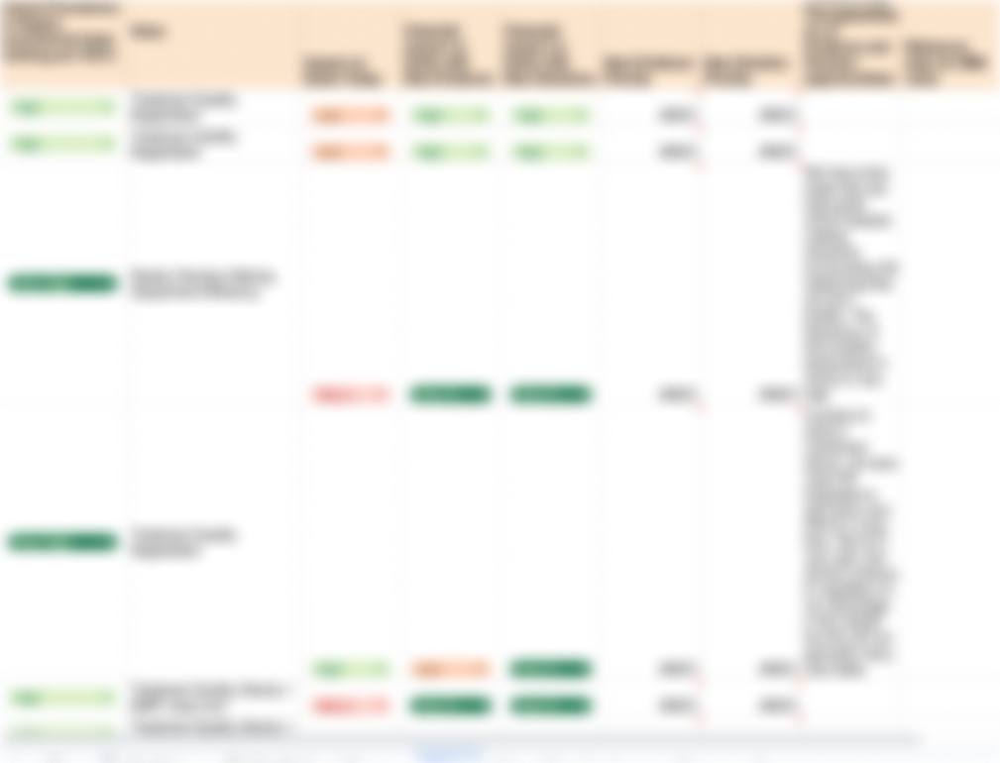
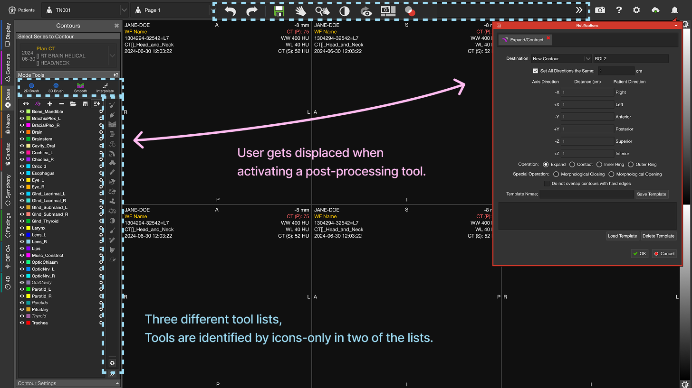
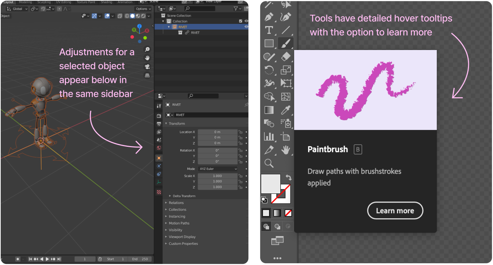
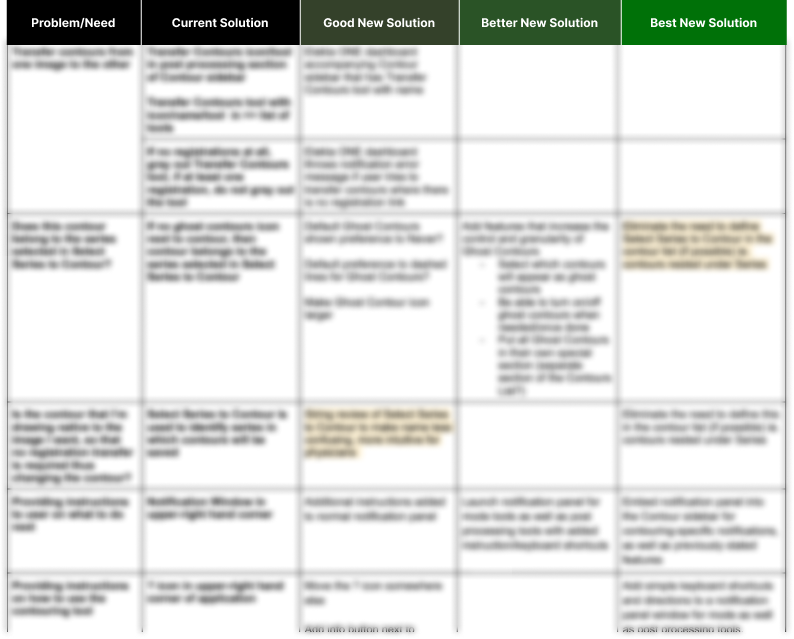
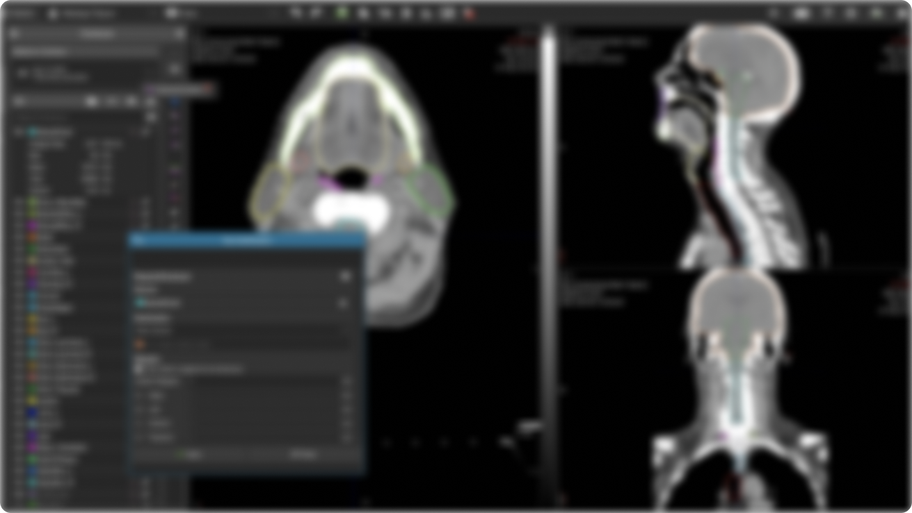
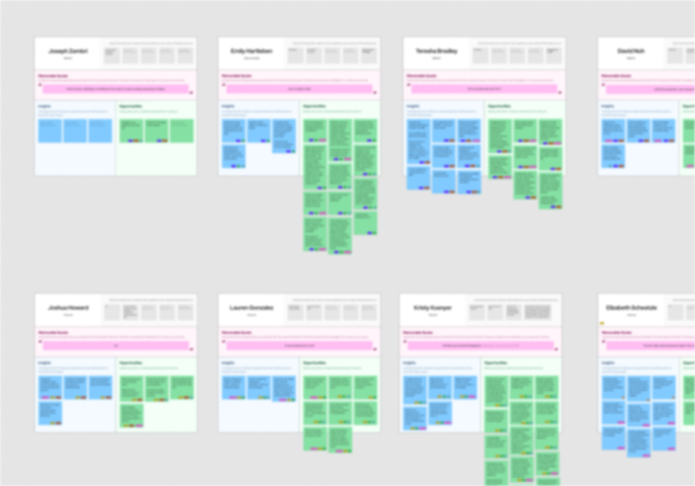
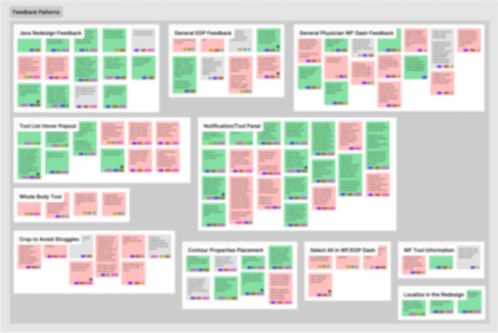
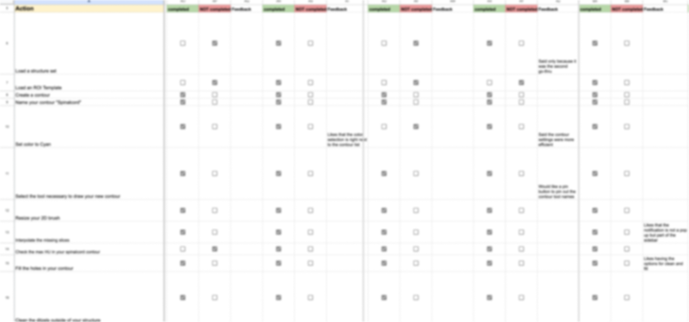

Figma Prototyping
⬤
Cross Function Collaboration
⬤
A/B User Testing
⬤
Analyzing Feedback
I represented the UX team on the Radiation Oncology Leadership Strategy board to identify growth opportunities for 2025. Throughout the strategy process, several workshops were held where we discussed larger feedback patterns that have been hurting the sales and adoption of our software in new and existing markets. The feedback we looked at was gathered from support calls, tradeshow/conference events, and from articles and other online discussions. One prevalent issue was that physicians consistently considered MIM’s contouring tools to be “too complex.” Often this was a barrier for us to convert clinics over to MIM from competitors.
Physicians were an important role to target as they often set the standards for the rest of their department at a clinic. If a physician didn’t like using MIM, chances are the rest of the clinic wouldn’t be using MIM. During the strategy workshops we assessed the impact this had on current and new deals as well as comparing those impacts to the overall value gain we would see by pursuing a better solution. Improving physician’s confidence and satisfaction with our tools became one of the top priorities due to the large value add that it was determined to have.

The first step of redesigning MIM's contouring tools was to do a competitive analysis and determine how MIM's UI compares to competitors. Because of the size of our industry and how niche the products are, there aren’t any industry standards in terms of UI. Most competitors place tools in their own unique spots. This can make it difficult for users to switch away from a competiting product, since they are almost always learning an entirely new interface. When questioning users in the industry, we saw a pattern of "familiarity" come up time and time again. Physicians did not want to dedicate time to learn a new interface. This would also become a challenge for our existing users, since we did not want to disrupt their work by making big changes.
Despite the lack of consistency from product to product, it quickly becomes apparent how much we displace the user throughout their clinical workflow. Many competitors would at least group similar tools and actions into key areas on the screen. Our tools require the user to look back and forth across the screen and click things on opposite sides back to back. We also were the only product to solely rely on icons to identify tools. This was a common support burden and our customer support team has spent many hours helping users find the tools that they need. It doesn’t help that MIM displays contouring tools in 3 different tool lists, which can be confusing if you aren’t sure which tools are found in what list.

Besides looking strictly at other medical software, I decided to explore how similar products of other industries handle common UI patterns. Some tools that I looked at included Adobe Illustrator and Blender due to the relevance of their drawing tools in comparison to our contouring tools. Additionally, both of those products are fairly complex, which will give some insight on how to handle complex features. I made note of where tools and their settings were commonly displayed. I also noticed how each software tried to ease the learning curve of discovering and using new tools. I used these ideas as a base to branch off of for our solution.

Brainstorming was done in collaboration with our product team. This comprised of a product manager, site development manager, clinical scientist, software engineer, and myself. We based our ideas on the inspiration from competitors and user feedback.
Due to the scope of the project, we knew there were limits for how much we could change by the next version. This led to our product manager requesting us to categorize requirements as “Good”, “Better”, and “Best”. The Good option would be the bare minimum needed to satisfy our goal. The Better option would offer more improved UI for the users while still within reasonable resource constraints. And the Best option was presumed to be the choice we’d go with if we had unlimited resources and time. Using this structure allowed us to assess and prioritize the different design ideas we had.

After defining our requirements and assessing our options, we ultimately felt like the “Best” solution was going to be worth the effort. However, since it would take a considerable amount of engineering resources, we decided to compare it to our “Good” solution and gain user feedback to validate whether or not going the extra mile would be valuable to the user.
The focus of these tests was to determine if our “Good” solution would perform comparably to our “Best” solution in terms of usability. We also wanted to hear direct feedback on user opinions of the “Good” option vs our current product vs the “Best” option. If users performed poorly on the “Good” solution compared to the “Best” and if they also preferred our existing product over the “Good” solution (A.K.A. no change is better) then we would move forward with the “Best” solution.

I worked on several prototypes for these options that walked through specific clinical scenarios for dosimetrists and physicians. While the intent of the project was to focus on attracting physicians, dosimetrists made up a huge portion of our existing users and we also wanted to verify that the new designs could improve their experience and not cause additional problems.
Once the prototypes were made, we scheduled time with users to test both scenarios. I worked with Site Development Manager, Ryan Cole, who hosted the user tests while I recorded notes. We shared links to the Figma prototype and had users share their screens. We then asked them to click through the prototype to achieve various tasks and recorded whether or not they could complete the task.

I recorded notes specifically using the Interview Snapshot templates from Teressa Torres book- Continuous Discovery Habits. At the end of each week, I would go through and process the feedback in batches. This involved me labeling each individual feedback on who the user was (which included new/advanced MIM users and physician/dosimetrist roles) as well as which prototype the feedback was referring to (A/B). Then I separated out common feedback patterns and noted the overall positive or negative sentiments users had for each prototype. This helped my team get a general idea of which prototype was preferred and by who.

Additionally, we had a spreadsheet with the recorded completion of each task and could compare that with the general feedback. This spreadsheet was filled out by Ryan Cole and I simply used the data to compare to our more detailed feedback notes.

After usability testing, we decided that our “Best” solution would be ideal to pursue. The next step was planning out the resources to make this happen, which ultimately meant breaking this design into chunks that would slowly get released on each upcoming version. Sometimes “chunking” a design may not always be possible, but the way I had designed this allowed for us to easily focus on one piece at a time.
From here we would more closely look at each chunk of the design, clean it up, and collaborate with engineering to discuss limitations and any additional considerations.